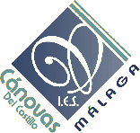
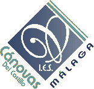
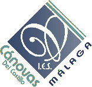
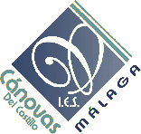
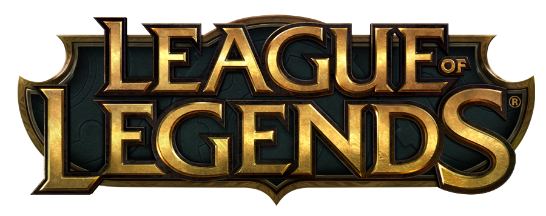

 

El actual campeón.

League of Legends (también conocido por sus siglas LoL) es un videojuego de género multiplayer online battle arena (MOBA) desarrollado por Riot Games para Microsoft Windows y OS X.
En octubre del 2012, contaba con 70 millones de jugadores registrados. Para marzo del 2013 se registró un pico de 5 millones de jugadores conectados al mismo tiempo en todo el mundo. Es un juego de alta competitividad siendo uno de los juegos más populares de los deportes electrónicos (e-sports).
El juego está inspirado en el popular mapa personalizado del videojuego Warcraft III, Defense of the Ancients: Allstars (abreviado normalmente con las siglas DotA) diseñado por Steve «Guinsoo» Feak y Steve «Pendragon» Mescon, el cual a su vez está basado en el escenario de StarCraft «Aeon of Strife».
Campeonato mundial disputado en Estados Unidos en 2013.
Los jugadores (llamados «invocadores») se enfrentan entre ellos dividiéndose en 2 equipos de 3 o 5 jugadores cada uno, dependiendo si el modo de juego es 3 vs. 3 en el escenario El Bosque Retorcido o 5 vs 5 en los escenarios El Abismo de los Lamentos y La Grieta del Invocador, siendo este último mapa el más famoso y considerado el estándar en el juego competitivo.7 Antes de empezar la partida, los jugadores deben escoger un personaje (llamado «campeón») durante la fase de «selección de campeón», con el cual jugarán toda la partida hasta su conclusión. Desde noviembre de 2015, hay 129 campeones disponibles,8 pero aproximadamente cada dos meses introducen uno nuevo al juego, siendo el último a introducir, Jhin.
Una vez terminada la fase de selección de campeón la partida propiamente empieza. Los jugadores de cada equipo aparecen en su respectiva área del mapa, dentro de su base, situadas ambas diametralmente opuestas. Es en la base de cada equipo donde se encuentra su nexo. El objetivo del juego, y lo que determina el equipo ganador, es destruir el nexo del equipo rival. En todos los escenarios, a excepción de Dominion (modo de juego que consistía en capturar objetivos, este fue removido del juego el 22 de febrero del 2016 por su falta de popularidad) previamente es necesario acceder a la base enemiga eliminando sus inhibidores que a la vez son protegidos por torretas distribuidas a lo largo de las líneas. En el El Abismo de los Lamentos hay una sola línea hacia la base enemiga, en El Bosque Retorcido son dos líneas y en La Grieta del Invocador (siendo el escenario principal de League of Legends) son tres líneas: calle superior, calle central y calle inferior (llamados en inglés top, mid y bot, respectivamente).
En cada base aparecen cada 30 segundos oleadas de súbditos, personajes no jugadores de inferior ataque y vida, los cuales avanzan por las líneas apoyando los asedios. En la jungla (secciones que no forman parte ni de las bases ni de los carriles) hay criaturas neutrales que se mueven poco o nada de su posición y que aparecen y reaparecen cada cierto tiempo, algunos de los cuales ofrecen bonificaciones (buffs en inglés) temporales o permanentes. Cada jugador puede matar súbditos, torretas y campeones enemigos, así como criaturas neutrales, para obtener oro y experiencia (farm en inglés). Con el oro se compran objetos para aumentar estadísticas (ataque, defensa, vida, etc.) y con los niveles se mejoran las habilidades del campeón.
En las partidas de 5 vs. 5, pasados 20 minutos de partida, es posible realizar una rendición. Cualquier jugador puede iniciar la votación (tomándose como un voto a favor) y al terminar la misma el 70% del equipo debe estar de acuerdo (4 jugadores de 5). Si una petición de rendición ha sido rechazada se deben esperar 3 minutos para poder pedir otra; mientras que si la rendición ha sido aprobada, el nexo propio se autodestruye, acabando así la partida en una derrota.
League of legends ha sido el primer juego en dar un soporte total a los jugadores más competitivos ofreciendoles oportunidades y por ello ha sido el mayor auge en el mundo de los e-sports.
El 2010 World Cyber Games organizó un torneo de League of Legends en Los Ángeles, en el que varios equipos de China, Europa y los Estados Unidos compitieron. El equipo CLG de América del Norte ganó el torneo, ganando un premio de 7.000$.
El juego competitivo alcanzó nuevas alturas en el primer campeonato Mundial en junio de 2011. El acto, celebrado en DreamHack en Suecia, EE. UU. ofreció 100.000 dólares en premios. El equipo europeo Fnatic derrotó a los equipos de Europa, EE.UU. y Asia para ganar el torneo y recibió EE.UU. $ 50.000 en premios. Más de 1,6 millones de espectadores vieron la emisión de streaming del evento, con un pico de más de 210.000 espectadores simultáneos en una semifinal.
Después de la temporada 1, Riot anunció que 5.000.000 de dólares se pagarían a lo largo de la temporada 2. De estos 5 millones, 2 millones se destinarán a los socios de Riot incluyendo las principales asociaciones eSports, IPL y otros. Otros 2 millones van a la temporada 2; eliminatorias y el campeonato mundial de Riot. La final de un millón se destina a pequeños organizadores que se aplican a Riot para albergar torneos League of Legends.
El 13 de octubre de 2012, el equipo profesional de Taipéi Assassins de Taiwán (TPA) superó a Azubu Frost de Corea del Sur 3-1 en la final del Campeonato del Mundo temporada 2, y se entregaron 1 millón de dólares en premios.
SK Telecom T1 ganando el 3er Campeonato del mundo
A partir de 2013, League of Legends es el juego más popular de los deportes electrónicos en Corea del Sur.
El 23 de marzo de 2013, los estudios cinematográficos en Roma acogió la presentación italiana de League of Legends, más de 1.500 personas estuvieron presentes, junto con los desarrolladores de Riot Games, periodistas y varios invitados. El horario de la demostración incluía un concurso de cosplay y un partido de desafío entre dos equipos italianos.
El 19 de octubre de 2014 se realizó la cuarta edición del campeonato mundial llamado World Championship 2014 donde participaron 16 equipos por un premio de $2.130.000 de dólares repartido entre los primeros cuatro lugares. La final del evento fue realizada en el Estadio Mundialista de Seúl ubicado en la ciudad de Seúl, capital de Corea del Sur donde el equipo Samsung White fue declarado ganador venciendo al equipo Star Horn Royal Club.13 Al finalizar la gran final, el grupo Imagine Dragons interpretó la canción "Warriors", una colaboración entre Riot Games e Imagine Dragons para este torneo.14 La transmisión del evento fue vista por 27.000.000 de personas.